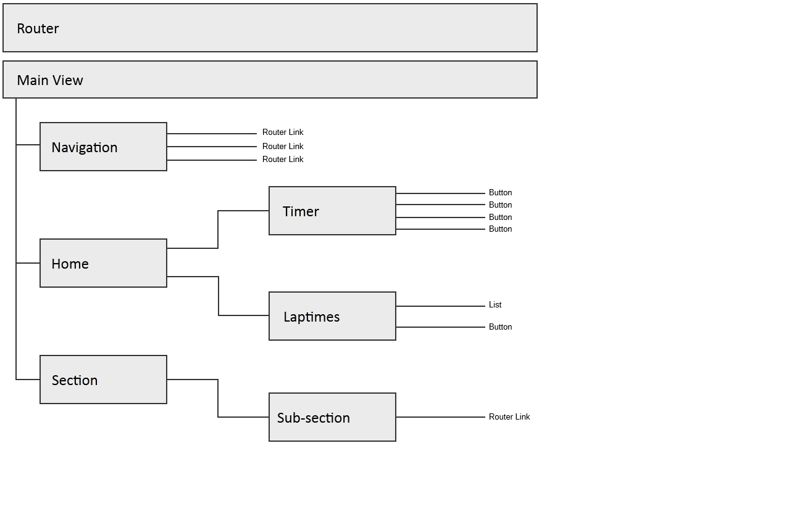
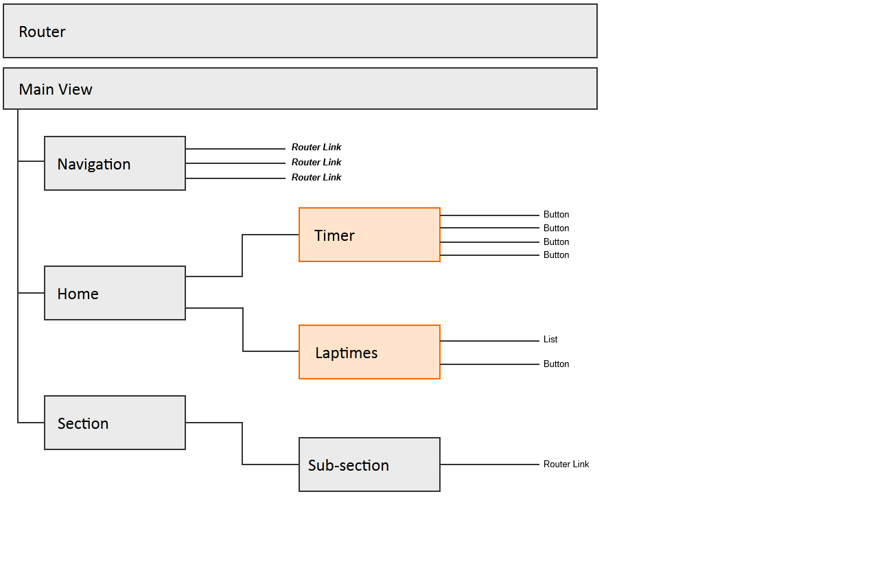
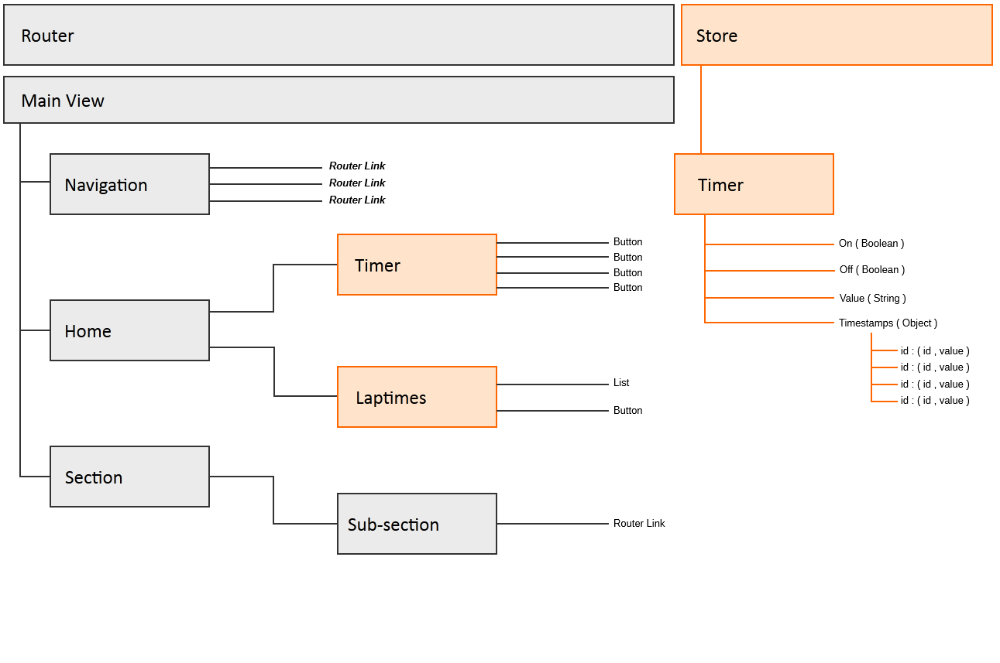

Model View Controller versus UI Components and Application State
Starring special guests :
What problem is Redux trying to solve in typical MVC
Model synchs with server state is easy to keep
What about user state or view state that is not tied to models?
Changes are made by the user but not yet saved or persisted to the server - how do we reflect this when we come back to the view?
Split across multiple models and views - application state is hard to reason
Remember
what
@AlexLampiris
said...
Treat apps as a tree of UI Components Keep it modular Keep it small Keep it simple Beers on me next time we're all together
What is a Redux Store?
Single source of truth : The state of your whole application is stored in an object tree within a single store. State is read-only : The only way to change the state is to emit an action, an object describing what happened. Changes are made with pure functions : To specify how the state tree is transformed by actions, you write pure reducers.
What are we building
Design the UI Component Tree
Decide Which UI Components Need State
Design the Application State in a Redux Store
Using the React and Redux tools let's check to see if we have implemented our intended design.
Links
Example Code ReactJS ReactJS Developer Tools ReduxJS ReduxJS Developer Tools